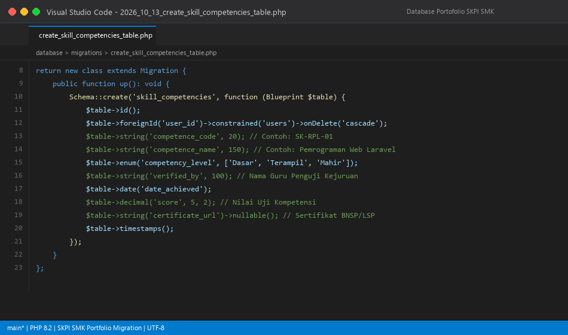
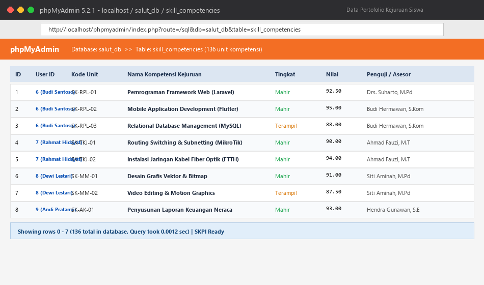
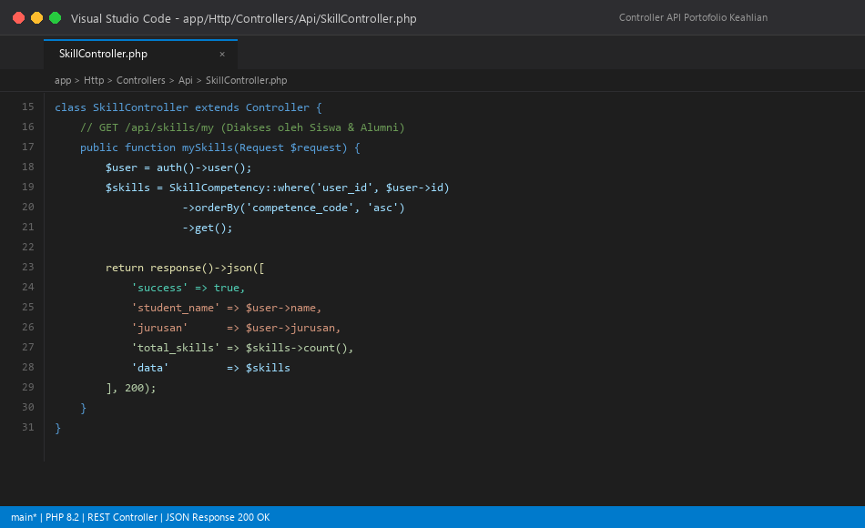
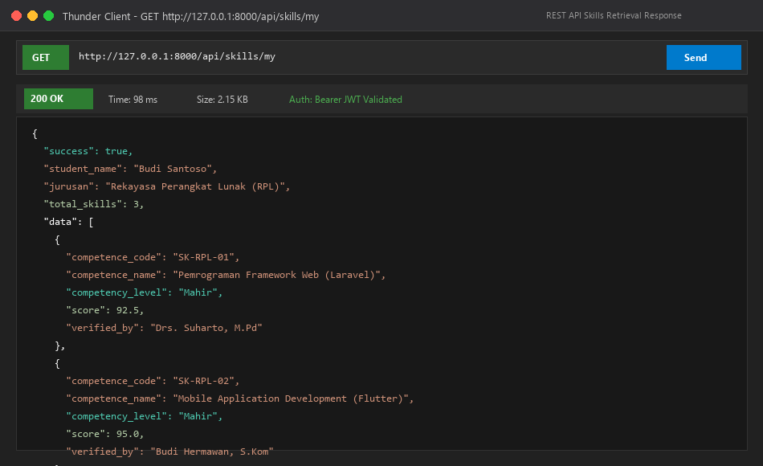
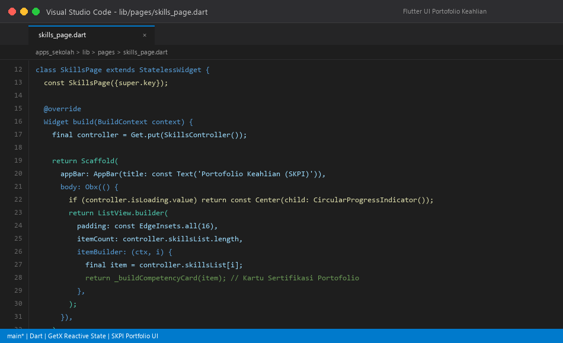
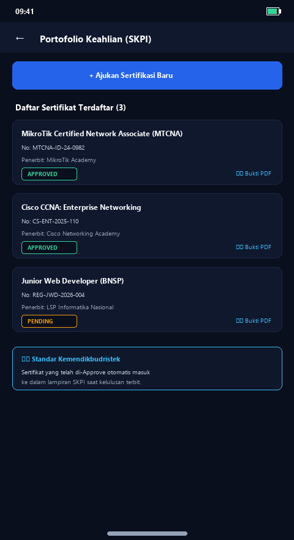
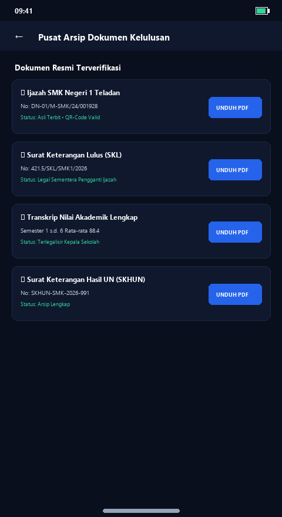
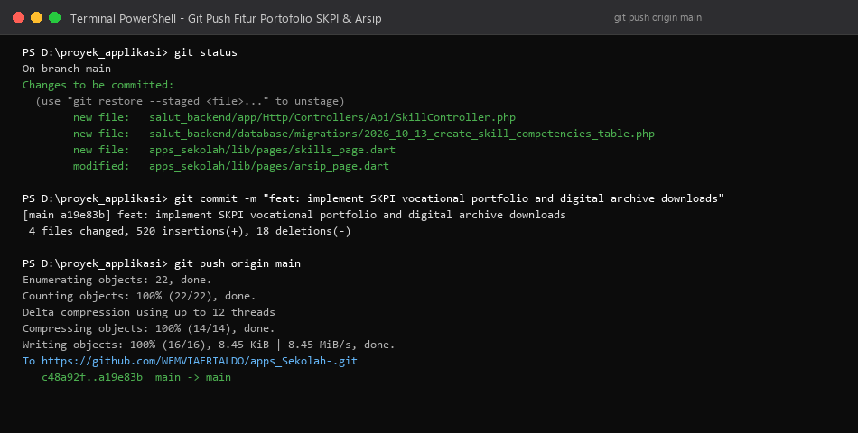

Untuk memenuhi kebutuhan spesifik Sekolah Menengah Kejuruan (SMK), nilai akademik ijazah perlu dilengkapi dengan Surat Keterangan Pendamping Ijazah (SKPI) yang memuat unit kompetensi keahlian standar SKKNI dan BNSP. Dirancang migration tabel baru skill_competencies yang memuat data user_id, competence_code, competence_name, competency_level (Dasar, Terampil, Mahir), score asesmen, dan verified_by (asesor).


Pada sisi backend dibangun SkillController.php dengan endpoint utama GET /api/skills/my. Endpoint ini menyajikan daftar seluruh unit kompetensi kejuruan yang telah diselesaikan oleh siswa terautentikasi sesuai bidang jurusannya (RPL, TKJ, atau Multimedia). Pengujian endpoint menunjukkan respons 200 OK dengan payload data kompetensi yang lengkap.


Pada aplikasi Flutter, dibangun antarmuka skills_page.dart yang menyajikan kartu-kartu capaian unit kompetensi keahlian. Setiap kartu memuat rincian kode unit, predikat kemahiran dengan badge warna informatif (Mahir hijau, Terampil oranye), skor capaian, dan nama asesor penguji, serta dilengkapi tombol aksi untuk mengunduh berkas SKPI resmi.


Untuk mencegah kerusakan atau kehilangan ijazah fisik serta mempermudah legalisir digital bagi alumni, dibangun modul arsip_page.dart. Alumni dapat melihat dan mengunduh berkas digital (Ijazah Asli, SKL, dan Transkrip Nilai) yang telah dibubuhi QR-Code verifikasi resmi dan Tanda Tangan Elektronik.

Seluruh controller, migration kejuruan SMK, dan modul antarmuka Flutter disinkronisasikan ke repositori GitHub WEMVIAFRIALDO/apps_Sekolah-.
